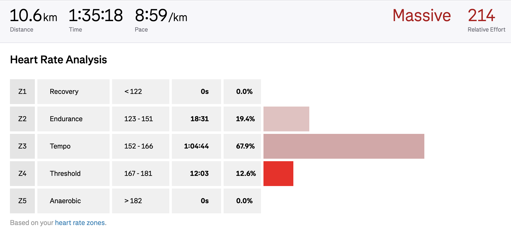

2025/09/07
I ran the Kreuzberger Viertelmarathon (10.5K) today. I couldn't stick to my running plan. New job came with new schedule and I couldn't find time to run during the weeks. Once I find a rhythm, I should be able to stick to the plan better.
Still, I hoped to do a lot better. I participated with my wife and tried to stick to her pace. This meant I was running very slow. I should've been running in zone 2. But I noticed it was between zone 3 and zone 4.

It was easier for me to finish the race at this pace, but it wasn't an "easy" run by any means. This makes me worry. My half-marathon is nearing and I have a lot to catch up on.
I finished the Viertelmarathon in 1:35:14 (09:04/km) and was dead last.